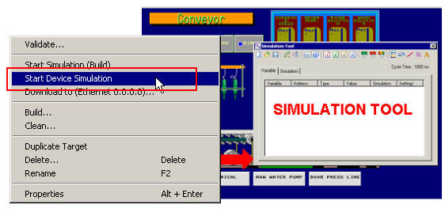

|
|
|
|
|
|
|
|
In addition to simply simulating the display of the graphical user interface, you can simulate device addresses, without actually connecting to the equipment. Vijeo Designer simulates equipment communication by changing variable values using specified patterns, such as a sine wave or incremental value.
Start Device Simulation does not run ladder logic to change variable values, nor does it attempt to mimic the ladder logic on the equipment. To change or modify the value that corresponds to the animation associated with a device address, use the Simulation Tool.

Using Device Simulation, you cannot connect the equipment to the editor PC and change variable values using the ladder program on the equipment. Communication between the editor PC and the equipment is ignored.
Device Simulation does not support diagnostic buffer alarms.
Device Simulation does not support indirect addressing.
In Device Simulation, even though you specify the address of an external BOOL variable to correspond with a bit address within an external integer type variable, you cannot change the value of the integer by writing to the BOOL. Device Simulation always keeps the values of each variable separate, no matter what device addresses they are mapped to. There is no such limitation when writing to the equipment.
Right-click the Target node and click Start Device Simulation to display the runtime application and the Simulation Tool.

In the Simulation Tool's Variable tab, select the variables you want to simulate. In the Simulation tab, set up how the external variable values change.

The build operation runs before the user application is simulated. If you don't want to run build, and simulate a previous version, in the Build Options dialog box select Do Not Build. For information about the Build Options and the build process, see Section 25.4, Building the Project.